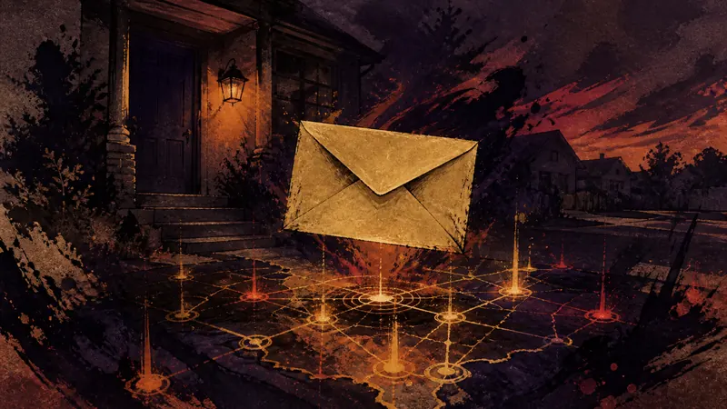
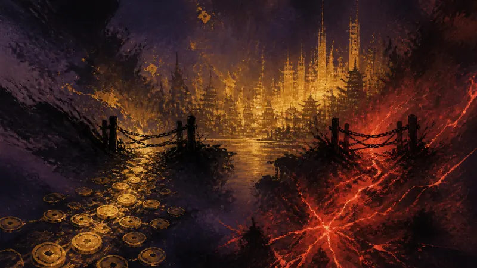
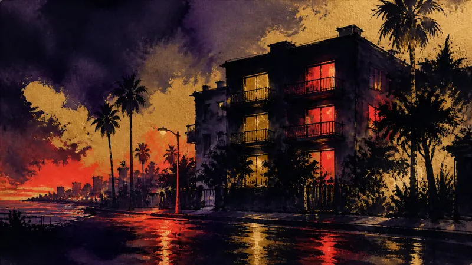
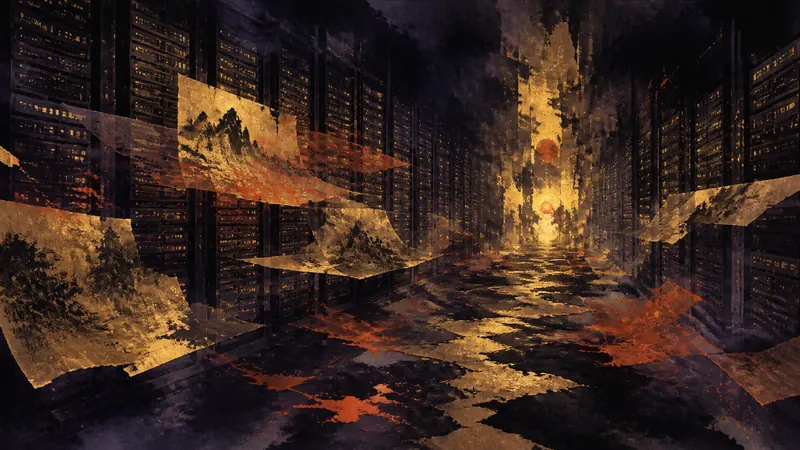

大廠

Activision 向《Call of Duty》作弊販售者送達停止侵權通知並公開影片（譯）
來源：Eurogamer
Activision 公開一段影片，內容是一名法律代表前往俄亥俄州一名《Call of Duty》作弊販售者住處，交付停止侵權通知。這顯示發行商正以法律手段打擊作弊服務。
先鴉｜黎明快訊
玩家能動性：政策如何限制它、產業如何形塑它、敘事設計如何實現它。
最新消息
第一線
大廠

來源：Eurogamer
Activision 公開一段影片，內容是一名法律代表前往俄亥俄州一名《Call of Duty》作弊販售者住處，交付停止侵權通知。這顯示發行商正以法律手段打擊作弊服務。
大廠

來源：Eurogamer
Rockstar 表示《GTA 6》上市時不會加入微交易，也不會使用生成式 AI。這項說明限定於遊戲首發階段。
大廠

來源：IGN
《GTA 6》玩家認為，他們在現實世界發現了遊戲角色傑森與露西亞位於罪城的公寓原型。該地點即使確實是靈感來源，玩家也可能無法親自造訪。
大廠

來源：Kotaku [controversial]
報導稱，一批約 13TB 的遊戲平台 depot 資料疑似涵蓋 2003 至 2013 年。資料據稱包含數千款第一方與第三方遊戲的預發布版本。